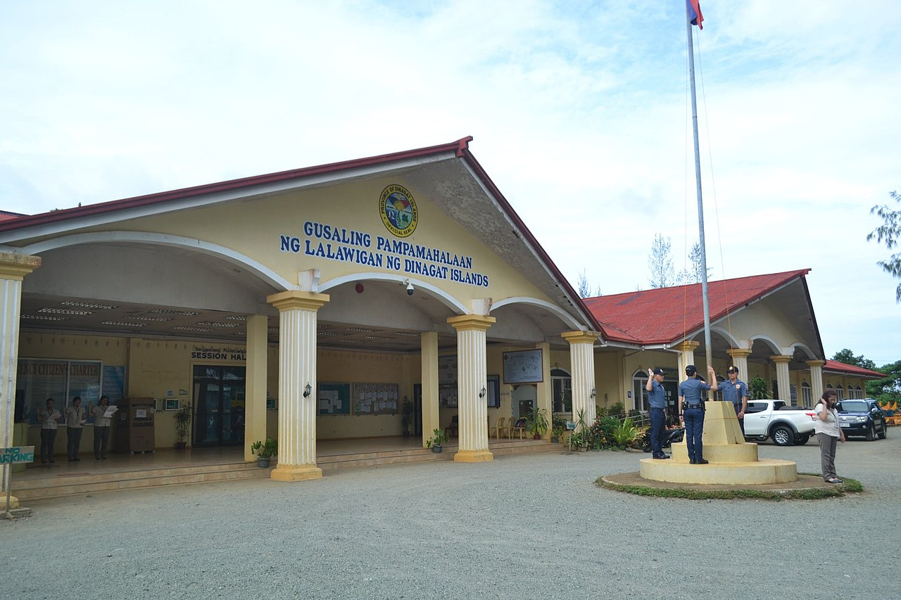
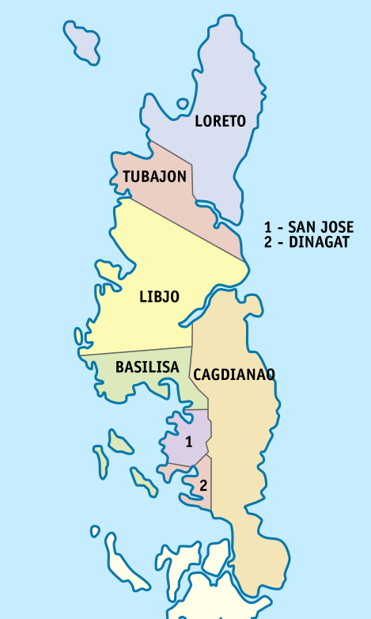
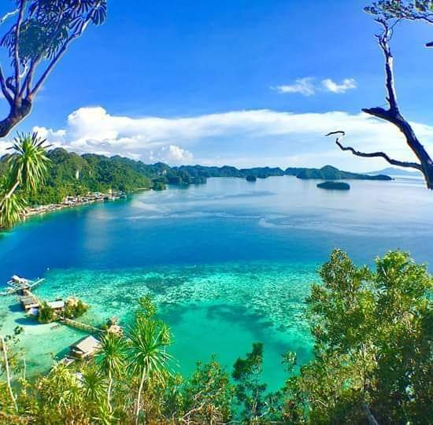

HISTORY
Province of Dinagat Islands, is an island province in the Caraga region of the Philippines, located on the south side of Leyte Gulf. The island of Leyte is to its west, across Surigao Strait, and mainland Mindanao is to its south.
Its main island, Dinagat, is about 60 kilometres (37 mi) from north to south.
The name of the island means "of the sea" or "like the sea", an affixed from of the root word dagat ("sea") in the Visayan languages.
History
An old map showing the current territories of the province as part of the historical province of Surigao
Surigao province map in 1918
Early history
The province in pre-colonial times was much influenced by the Rajahnate of Butuan which was nestled in present-day Agusan del Norte. It was also used as the entry point of the Rajahnate of Ternate, present-day Moluccas of Indonesia, to attack the Rajahnate of Butuan, Rajahnate of Cebu, the indigenous settlements in the Anda Peninsula of Bohol, and the Kingdom of Dapitan (located 'between' Panglao and Bohol), which later moved in northern Zamboanga after the Kingdom of Dapitan was destroyed.
Spanish colonial era
Although one of the newest provinces of the country, settlements in the Dinagat Islands were already present during the Spanish regime as a result of migration of people from nearby provinces of Bohol and Leyte. In particular during World War II, the allegedly magical province had a significant impact on the history of the nation

GEOGRAPHY
The province is one of the smallest island provinces in the country with a total land area of 1,036.34 square kilometres (400.13 sq mi).[18] Located to the northeast of Surigao del Norte, in mainland Mindanao, the Dinagat Islands are separated physically from Awasan and Nonoc Islands of Surigao del Norte by the narrow, 15 kilometres (9.3 mi) long, Gaboc Channel. It takes about 75 minutes to cross from Surigao City Port to San Jose Port by pump boat.
The province consists of the eponymous Dinagat Island and surrounding islands and islets, including Cabilan Island in Dinagat, La Isla Aga and Lalaking Bukid in Basilisa, Kisses Islets in Libjo, and Hibuson, Stingray Islet, and Puyo Islet in Loreto.
Mount Redondo on Dinagat Island is the highest point of the province reaching 939 metres (3,081 ft) above sea level.
Climate change
The Dinagat Islands province is among the top 20 most vulnerable provinces to climate change in the Philippines.
DEMOGRAPHICS
The population of the Dinagat Islands in the 2020 census was 128,117 people, with a density of 120 inhabitants per square kilometre or 310 inhabitants per square mile.
The original inhabitants of the province are called "Lumad", while residents of the Dinagat Islands are called "Dinagatnon". The Dinagat Islands is predominantly a Cebuano-speaking province. However, towns facing the Surigao del Norte maritime border are Surigaonon-speaking, particularly the municipalities of Dinagat and Cagdianao due to their proximity to the province of Surigao del Norte. Barangay Panamaon and the historic Hibuson Island in Loreto speak Waray-Waray. Influences of the Cebuano and Boholano languages with a Tausug accent can be traced. Most can also speak various levels of Tagalog and English.
Religious breakdown in the province shows Catholicism at majority with 53% adherence while Iglesia Filipina Independiente or Aglipayan is the significant minority religion at 23%. Other minority religions are the Church Body of Christ- Filipinistas (12%), United Church of Christ in the Philippines (4%), Iglesia ni Cristo (4%) and other smaller Christian groups (Dinagat Island Socio Economic Factbook, 2007).
Recent cultural, religious and socioeconomic changes of the province have allowed the rebound of Catholics (and Aglipayans in some degree) and their numbers have constantly increased; the province had experienced a Catholic decline in several decades (1970s-early 2000s) due to immigration of the members of Philippine Benevolent Missionaries Association in the 1960s. There were some decades (1990s-2000s) where Catholics became minority with as low as 37% of the population.
ECONOMY
Economy of Dinagat Islands Province The people of Dinagat Province are primarily dependent on fishing and marginal farming for their livelihood. Fish, rice, and coconut are main products.

TOURISM AND ATTRACTION
Dinagat Islands is a young island-province at the northern tip of Mindanao. Many describe Dinagat Islands as a hidden gem of the Caraga Region XIII. The Islands are enriched with great bio-diversity, abundant natural wonders and rich resources. Dinagat Islands has a multitude of fascinating white sandy beaches with arrays of colossal rock formations. These sites and attractions are as diverse as the topography of the islands and islets.
The province is known for its caves, resorts, and beaches. These include Bitaug Beach, Campintac Black Beach No. 2, Linao Spring Resort, and San Juan Cave (all in Loreto), Lake Bababu, Puerto Prinsesa Beach & Hagakhak Cave in Basilisa, Tagberayan Beach, Sayaw Beach, Legaspi Water Falls, Hinabyan and Leandro's Beach Resort in Cagdianao, Talisay Beach in Tubajon, Quano Blue Lagoon and Quano Cave, Ben Paz Mountain Resort and Oasis Islet Resort in Libjo, and the Cab-ilan Beach & Cab-ilan Gamay Beach in Dinagat.